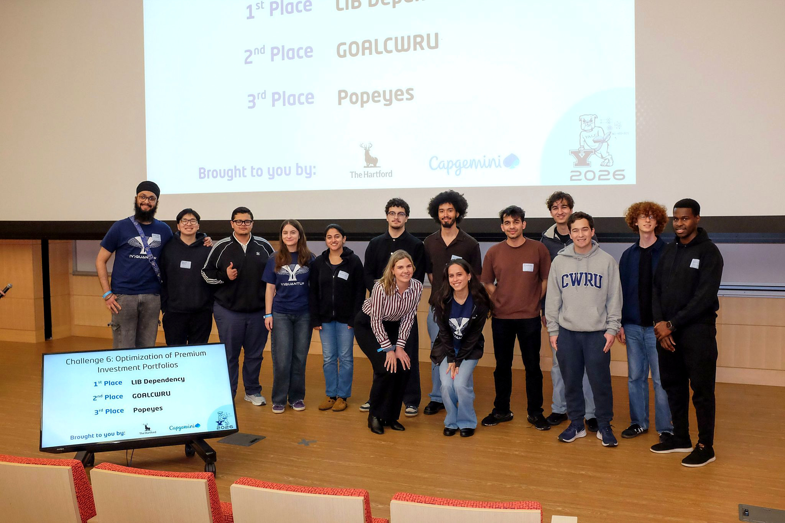
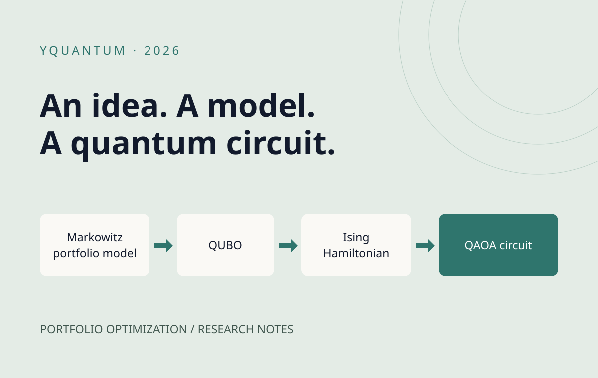
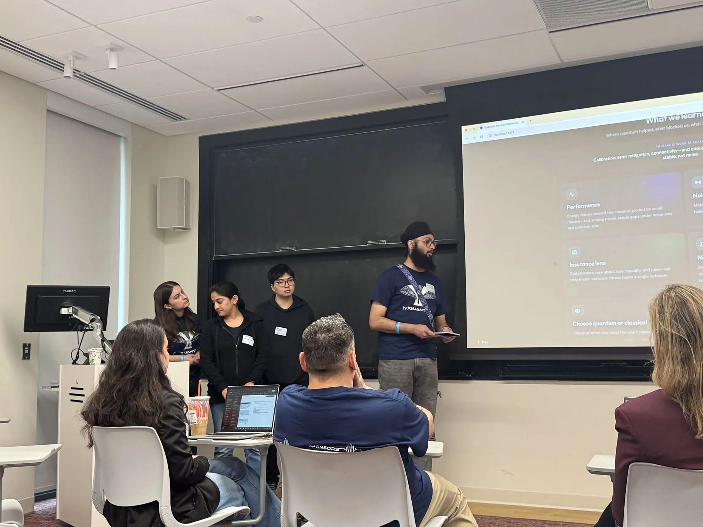
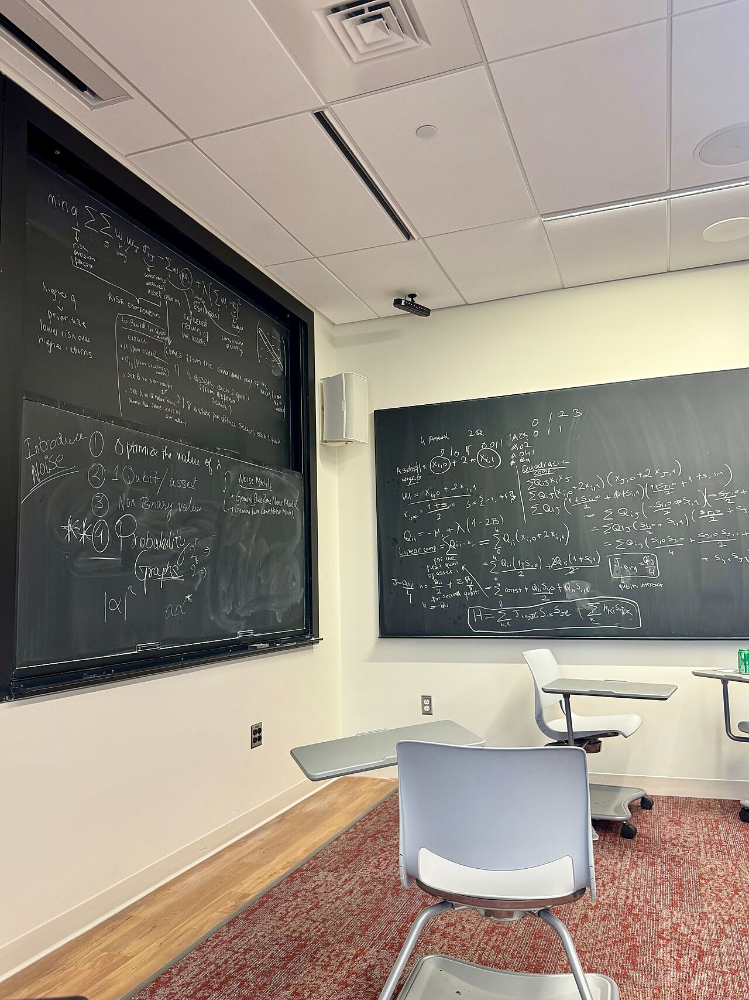
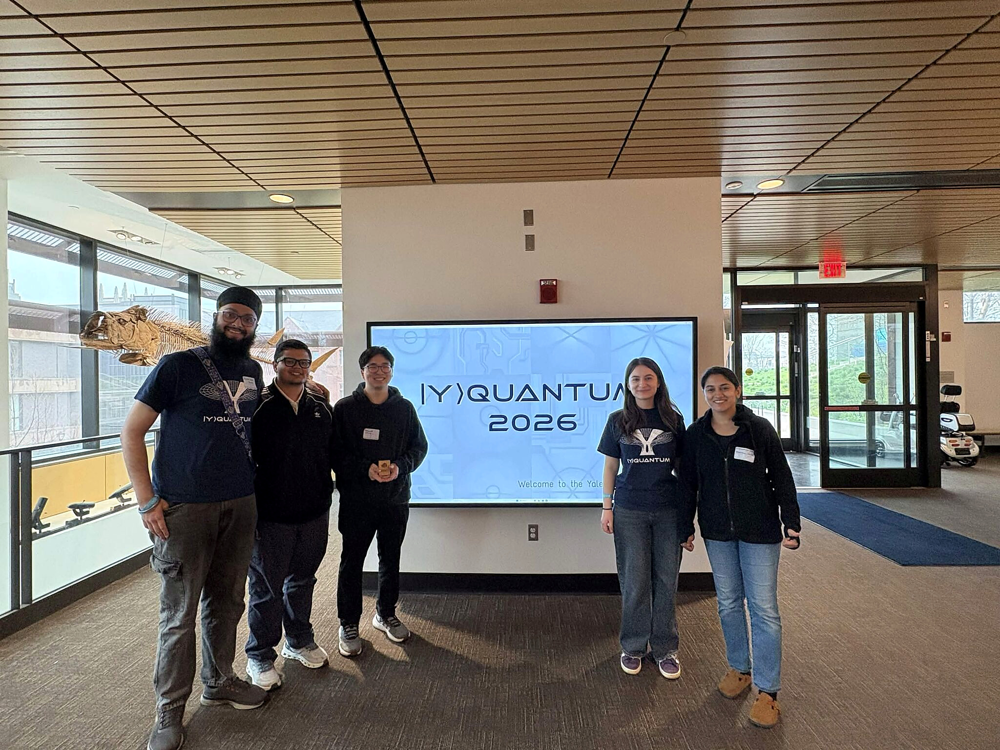
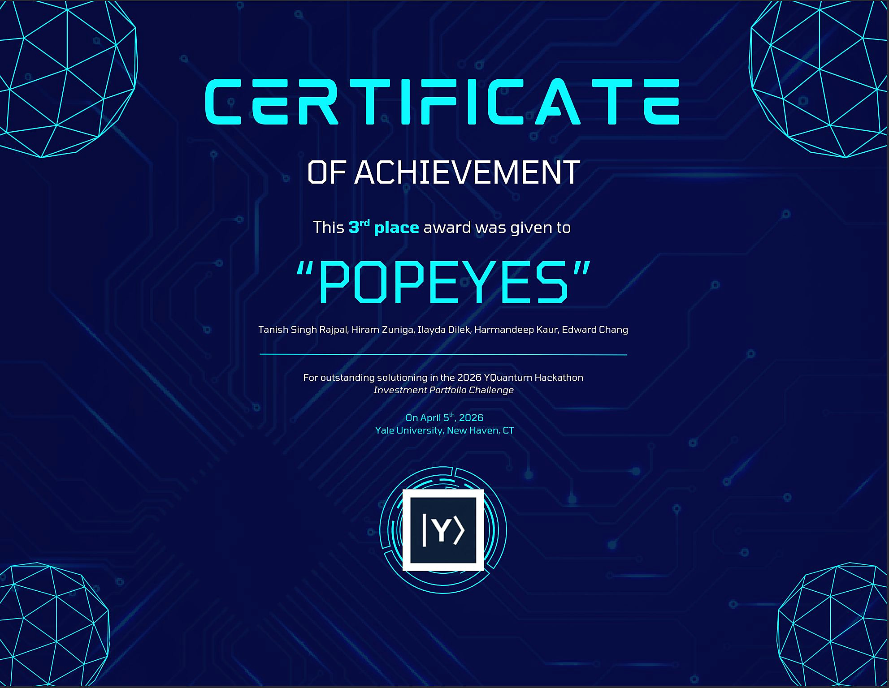

My team placed third in the Capgemini and The Hartford challenge track at Yale University’s YQuantum 2026 hackathon. Our project explored investment portfolio optimization using the Quantum Approximate Optimization Algorithm (QAOA).

We started with a classical Markowitz portfolio formulation, mapped it into a quadratic unconstrained binary optimization (QUBO) problem, and implemented the corresponding quantum circuit.
My contribution focused on the formulation and circuit-construction work, including the mapping from the portfolio objective to an Ising Hamiltonian for the QAOA workflow.



Beyond the theoretical implementation, we explored how performance changes under more realistic conditions. By introducing noise and testing different system sizes, we observed how sensitive these approaches are to constraints like limited qubits. Seeing firsthand the gap between theoretical models and practical quantum systems was one of the most rewarding and insightful parts of the weekend.
The project repository contains our work on optimizing premium investment portfolios.
A huge thank you to our mentors Nadine van Son, Mike K., and Luisa Baldino for their guidance, with special thanks to Mike for the 3 a.m. pizza and constant moral support, and to Capgemini and The Hartford for sponsoring the challenge.
I am incredibly grateful to have collaborated with İlayda Dilek, Harmandeep Kaur, Hiram Zúñiga, and Edward Chang.


{kind=link}